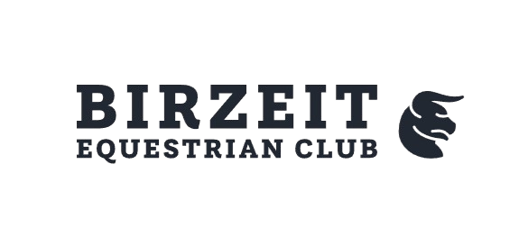

About Us
Birzeit Equestrian Club is a prestigious and highly-regarded equestrian organization located in the picturesque town of Birzeit, Palestine. Founded in 1992, the club has grown to become one of the leading equestrian centers in the Middle East, attracting top-tier riders and horses from around the globe. The club offers a variety of programs, including horse shows, lessons, and competitions, ensuring that members have access to the best possible training and experience. Some notable achievements of the Birzeit Equestrian Club include winning multiple international championships, placing first in numerous regional competitions, and providing opportunities for young people to develop their passion for equestrianism.